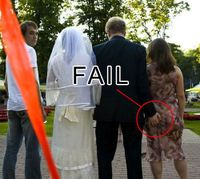

Novio
 De: La Frikipedia, la enciclopedia extremadamente seria.
De: La Frikipedia, la enciclopedia extremadamente seria.
Se conoce como novio al individuo con tres piernas cuya existencia se reduce al sexo, a los videojuegos, y al fútbol. Aunque hay indicios de que cada uno posee una personalidad y unas características diferentes a otro, aún no hay pruebas verídicas.
Características
Las características idóneas de un novio serian las siguientes pero es algo inusual verlas todas juntas en un sujeto:
- Fidelidad: lo cual le lleva a no poder mantener ningún tipo de relación más allá de la amistad con una hembra que no sea su novia. El incumplimiento de esta característica podría ocasionar desde una pelea hasta la ruptura de la relación, con lo cual pasaría a ser "soltero".
- Detallista: esta característica que pocos "novios" tienen es algo muy solicitado por las "novias", llevando a peleas si no son detallistas o a peleas si lo son en exceso. Es muy fácil de explicar lo "poco agrada, lo mucho cansa", para entenderlo también habría que saber los profundos y sin sentido cambios de humor de una mujer.
- Aceptar tal y como es a la novia: da igual si la novia es gorda, fea, bajita, con granos, el pelo irremediablemente asqueroso, si no se ducha, si quiere ser virgen hasta el matrimonio, si tiene orejas de elefante, nariz de Darth Vader, y labios de lombriz, etc. Todo da igual porque para ti tiene que ser la princesita que ella cree, dile que esta muy buena, que no tiene ni un grano, que su pelo parece seda, que su olor corporal te pone, que tú también eres virgen, que sus orejas sirven de paraguas... obligatoriamente tienes que mentir una vez cada dos minutos.
El novio de
IP anónima viendo porno mientras este no está.
- Complacer a la novia: esta es la característica más fácil, si un novio no quiere tener peleas con su novia lo mejor es decir que "sí" a todo, aunque esto implique no poder follar. Cuanto más te incomode la pregunta, y tengas más deseos de decirle que no, más tienes que expresar tu conformidad. Ejemplos prácticos:
- NOVIA: ¿Quieres que vayamos al cine
- NOVIO: Sí
- NOVIA: ¿Quieres que vayamos a casa de mis padres
- NOVIO: Claro cariño
- NOVIA: ¿Querrías que nos casáramos algún día?
- NOVIO: Por supuesto amor
- NOVIA: Me encantaría tener hijos, ¿a ti no?
- NOVIO: Obviamente que sí, clarísimamente vida mía
Después de decir que sí a todo, se tiene claramente que buscar una excusa como "Soy estéril" o "Moriré dentro de diez días" o también es muy usada "Los extraterrestres me abducirán dentro de poco y quieren que antes mantenga todas las relaciones sexuales posibles"
- Físicamente: es algo muy personal que debe decidir la novia, la única característica general que quiere cualquier hembra es que tengan una tercera pierna larga y gorda y por supuesto que sepan usarla.
Cualquier similitud entre estas características y la realidad es pura coincidencia.
Efectos secundarios
Tener novio puede implicar que varios aspectos de tu vida cambien, por eso hay que tenerlos en cuenta antes. Puedes cambiar tus hábitos nocturnos y no salir de fiesta, también es habitual que muchas de tus amistades masculinas ya ni te hablen (normalmente causado porque ya no optan a tener sexo contigo), otros efectos secundarios algo más peligrosos y que deberían de ser controlados son: ganas de asesinar a todos los hombres del planeta, odio a los individuos con tres piernas, y trastornos sexuales como fobias sexuales, o migraña perpetua. Por estas razones muchas hembras prefieren volverse bisexuales o simplemente lesbianas que es lo más cómodo.
Objetivos
Los últimos estudios sobre el cerebro masculino han descubierto lo que ya se sabía, los objetivos o deseos de estos individuos son los siguientes:
- Sexo, sexo y más sexo.
- Fútbol, Liga, Copa del Rey, Champions y otros deportes.
- Videojuegos, Playstation, xBox, Nintendo, ordenador, todo sistema en el cual se puedan evadir de toda realidad.
- Coches, motos, camiones, cualquier vehículo que pueda tener una velocidad adecuada para ser todo un hombre.
Pensaba que este espacio podía ocupar más pero no, sus únicos intereses son esos. Después están sus miedos más profundos, el que se lleva el premio es el compromiso, la medalla de plata se la damos a que se estropee la televisión o la Playstation, y la de bronce a hacer las tareas domesticas.
Frases típicas
 Todos son iguales, tarde o temprano les pasará, chicas
Frikipedia se ha tomado la libertad de traducir típicas frases de hombres, para que todo el mundo pueda entender su idioma tan complejo.
- ¿Te has enfadado?
- Si se ha enfadado ya no follo, joder.
- ¿De verdad que no te has enfadado?
- Mierda, quiero follar.
- ¿Esa falda no es algo corta?
- Quiere que todo el puto mundo le vea el coño.
- Esa camiseta enseña demasiado ¿no crees?
- Enseñando tetas a to' dios mientras que yo ni las pruebo.
- ¿¿¿¡¡¡Te gusta!!!??? ¿eh?
- Error 690, significado no encontrado.
- Quizá deberíamos probar cosas nuevas.
- Quiero darte por culo, déjame por favor.
- ¿Qué tal te fue con tus ex?
- ¿A que soy mejor en la cama? ¿a que sí?
- Estás muy guapa
- A ver si con esto follo hoy.
- Cariño, hoy tengo que quedarme en mi casa para estudiar.
- Déjame tranquilo de una puta vez que hoy quiero ver el fútbol.
- Te he echado tanto de menos vida mía.
- Espero que no se entere que le he puesto los cuernos.
- Cariño, toma este regalo.
- La he cagado pero bien, ojalá no se entere/ojalá me perdone.
- ¿Quieres ver una película?
- ¿Quieres follar?
- Ven a mi casa a ayudarme con esta asignatura.
- ¿Quieres follar?
- Ven a mi casa y así estamos más tranquilos.
- ¿Quieres follar?
- ¿Quieres follar?
- ¿Quieres hacer de todo conmigo?
Autor(es):
- Gororo
- Genericool
- Frikisexigirl!!!
- Shadowmura
- Persée
- Generibot
- Raykza
- Folktergeist1924
Frikipedia 2005-2016, Licencia
GFDL 1.2 - Extraído por FrikiLeaks